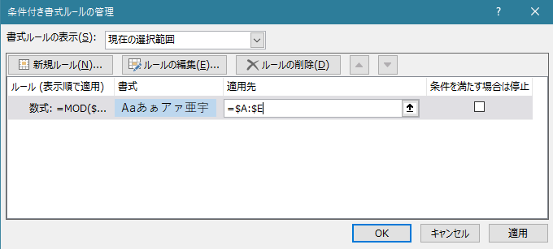
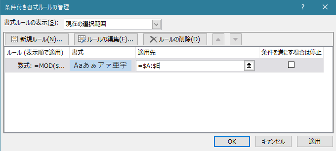
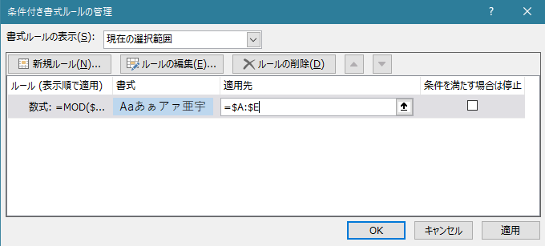

索引拾いのテンプレート生成
SAMPLE1


SAMPLE2
 

- 索引拾いのための Excel テンプレートを作成します。
- 各ページの項目数を SAMPLE1 のように Excel に整理して下記ボックスに貼り付けてください。
- SAMPLE2 のように
index列に条件付き書式で偶数の場合に背景色変更という設定をするとページの変わり目が見やすくなり便利です。
| ID | index | ページ | 項目 | 見よ先 |
|---|

index列に条件付き書式で偶数の場合に背景色変更という設定をするとページの変わり目が見やすくなり便利です。| ID | index | ページ | 項目 | 見よ先 |
|---|